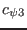
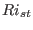
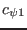
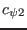

Next: Calculate steady-state Richardson number Up: Fortran: Module Interface turbulence: Previous: Flux Richardson number stability Contents
INTERFACE:
REALTYPE function compute_cpsi3(c1,c2,Ri)DESCRIPTION:
Numerically computes  for two-equation models from given steady-state Richardson-number  and parameters  and  according to (114). A Newton-iteration is used to solve the resulting implicit non-linear equation.
USES:
use turbulence, only: an,as,cmue1,cmue2
use turbulence, only: cm0,cm0_fix,Prandtl0_fix
use turbulence, only: turb_method,stab_method
use turbulence, only: Constant
use turbulence, only: MunkAnderson
use turbulence, only: SchumGerz
use turbulence, only: EiflerSchrimpf
IMPLICIT NONE
INPUT PARAMETERS:
REALTYPE, intent(in) :: c1,c2,RiREVISION HISTORY:
Original author(s): Hans Burchard, Lars Umlauf $Log: compute_cpsi3.F90,v $ Revision 1.3 2010-09-17 12:53:52 jorn extensive code clean-up to ensure proper initialization and clean-up of all variables Revision 1.2 2007-01-06 11:49:15 kbk namelist file extension changed .inp --> .nml Revision 1.1 2005/06/27 10:54:33 kbk new files needed